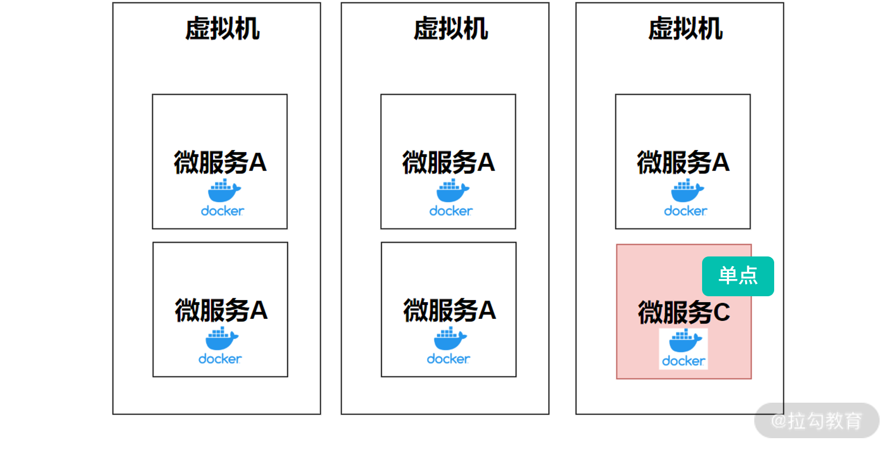
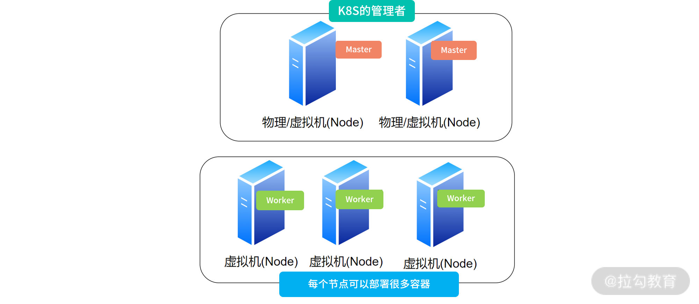
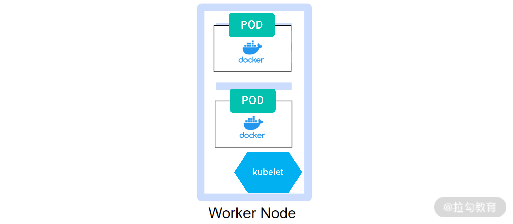
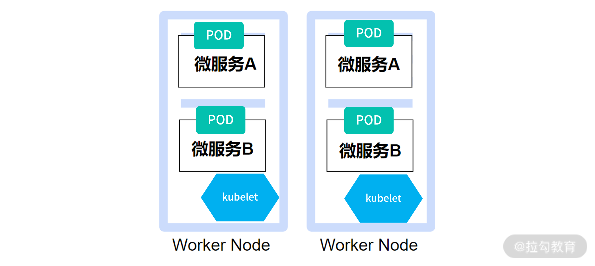
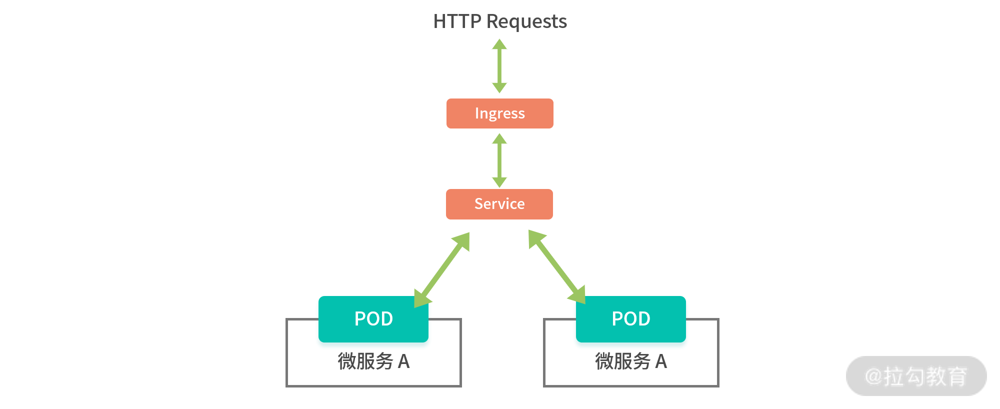
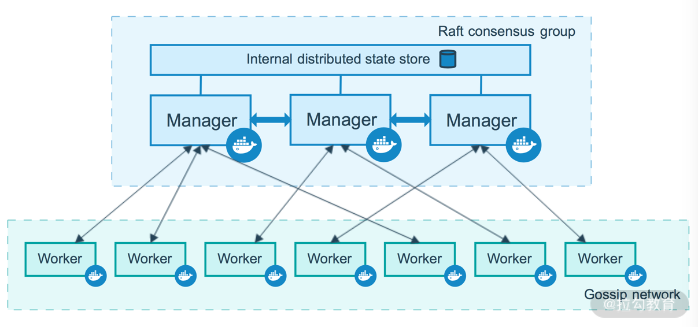
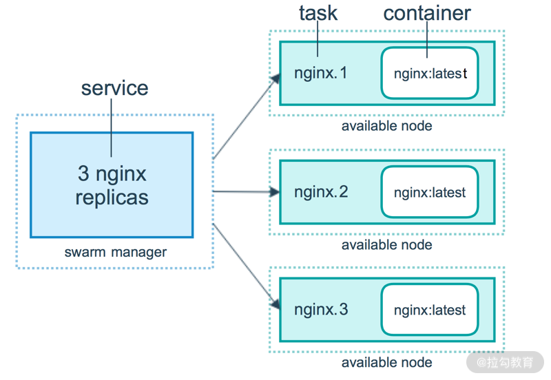

- 00 开篇词 为什么大厂面试必考操作系统？.md.html
- 00 课前必读 构建知识体系，可以这样做！.md.html
- 01 计算机是什么：“如何把程序写好”这个问题是可计算的吗？.md.html
- 02 程序的执行：相比 32 位，64 位的优势是什么？（上）.md.html
- 03 程序的执行：相比 32 位，64 位的优势是什么？（下）.md.html
- 04 构造复杂的程序：将一个递归函数转成非递归函数的通用方法.md.html
- 05 存储器分级：L1 Cache 比内存和 SSD 快多少倍？.md.html
- 05 (1) 加餐 练习题详解（一）.md.html
- 06 目录结构和文件管理指令：rm -rf 指令的作用是？.md.html
- 07 进程、重定向和管道指令：xargs 指令的作用是？.md.html
- 08 用户和权限管理指令： 请简述 Linux 权限划分的原则？.md.html
- 09 Linux 中的网络指令：如何查看一个域名有哪些 NS 记录？.md.html
- 10 软件的安装： 编译安装和包管理器安装有什么优势和劣势？.md.html
- 11 高级技巧之日志分析：利用 Linux 指令分析 Web 日志.md.html
- 12 高级技巧之集群部署：利用 Linux 指令同时在多台机器部署程序.md.html
- 12 (1)加餐 练习题详解（二）.md.html
- 13 操作系统内核：Linux 内核和 Windows 内核有什么区别？.md.html
- 14 用户态和内核态：用户态线程和内核态线程有什么区别？.md.html
- 15 中断和中断向量：Javajs 等语言为什么可以捕获到键盘输入？.md.html
- 16 WinMacUnixLinux 的区别和联系：为什么 Debian 漏洞排名第一还这么多人用？.md.html
- 16 (1)加餐 练习题详解（三）.md.html
- 17 进程和线程：进程的开销比线程大在了哪里？.md.html
- 18 锁、信号量和分布式锁：如何控制同一时间只有 2 个线程运行？.md.html
- 19 乐观锁、区块链：除了上锁还有哪些并发控制方法？.md.html
- 20 线程的调度：线程调度都有哪些方法？.md.html
- 21 哲学家就餐问题：什么情况下会触发饥饿和死锁？.md.html
- 22 进程间通信： 进程间通信都有哪些方法？.md.html
- 23 分析服务的特性：我的服务应该开多少个进程、多少个线程？.md.html
- 23 (1)加餐 练习题详解（四）.md.html
- 24 虚拟内存 ：一个程序最多能使用多少内存？.md.html
- 25 内存管理单元： 什么情况下使用大内存分页？.md.html
- 26 缓存置换算法： LRU 用什么数据结构实现更合理？.md.html
- 27 内存回收上篇：如何解决内存的循环引用问题？.md.html
- 28 内存回收下篇：三色标记-清除算法是怎么回事？.md.html
- 28 (1)加餐 练习题详解（五）.md.html
- 29 Linux 下的各个目录有什么作用？.md.html
- 30 文件系统的底层实现：FAT、NTFS 和 Ext3 有什么区别？.md.html
- 31 数据库文件系统实例：MySQL 中 B 树和 B+ 树有什么区别？.md.html
- 32 HDFS 介绍：分布式文件系统是怎么回事？.md.html
- 32 (1)加餐 练习题详解（六）.md.html
- 33 互联网协议群（TCPIP）：多路复用是怎么回事？.md.html
- 34 UDP 协议：UDP 和 TCP 相比快在哪里？.md.html
- 35 Linux 的 IO 模式：selectpollepoll 有什么区别？.md.html
- 36 公私钥体系和网络安全：什么是中间人攻击？.md.html
- 36 (1)加餐 练习题详解（七）.md.html
- 37 虚拟化技术介绍：VMware 和 Docker 的区别？.md.html
- 38 容器编排技术：如何利用 K8s 和 Docker Swarm 管理微服务？.md.html
- 39 Linux 架构优秀在哪里.md.html
- 40 商业操作系统：电商操作系统是不是一个噱头？.md.html
- 40 (1)加餐 练习题详解（八）.md.html
- 41 结束语 论程序员的发展——信仰、选择和博弈.md.html
- 捐赠
38 容器编排技术：如何利用 K8s 和 Docker Swarm 管理微服务？
作为操作系统的最后一个部分，我选择了三个主题：虚拟化、Linux 的架构哲学和商业操作系统的设计。我还是以探索式教学为主，帮助你建立和掌握虚拟化、程序架构、业务架构三个方向的基本概念。
操作系统的设计者和芯片的制造商们，早就感受到了虚拟化、容器化带来的变化，早早地支持了虚拟化，比如 Linux 的命名空间、Intel 的 VT-X 技术。这一讲作为虚拟化的一个延伸，我们一起讨论一下如何管理海量的容器，如何去构造一个高可用且具有扩展能力强的集群。
话不多说，让我们开始学习 Kubernetes 和 Docker Swarm 吧！
微服务
现在的面试官都喜欢问微服务相关的内容。微服务（Micro Service），指的是服务从逻辑上不可再分，是宏服务（Mono Service）的反义词。
比如初学者可能认为交易相关的服务都应该属于交易服务，但事实上，交易相关的服务可能会有交易相关的配置服务、交易数据的管理服务、交易履约的服务、订单算价的服务、流程编排服务、前端服务……
所以到底什么是不可再分呢？
其实没有不可再分，永远都可以继续拆分下去。只不过从逻辑上讲，系统的拆分，应该结合公司部门组织架构的调整，反映公司的战斗结构编排。但总的来说，互联网上的服务越来越复杂，几个简单的接口就可能形成一个服务，这些服务都要上线。如果用实体机来承载这些服务，开销太大。如果用虚拟机来承载这些服务倒是不错的选择，但是创建服务的速度太慢，不适合今天这个时代的研发者们。
试想你的系统因为服务太多，该如何管理？尤其是在大型的公司，员工通过自发组织架构评审就可以上线微服务——天长日久，微服务越来越多，可能会有几万个甚至几十万个。那么这么多的微服务，如何分布到数万台物理机上工作呢？
如下图所示，为了保证微服务之间是隔离的，且可以快速上线。每个微服务我们都使用一个单独的容器，而一组容器，又包含在一个虚拟机当中，具体的关系如下图所示：

上图中的微服务 C 因为只有一个实例存在单点风险，可能会引发单点故障。因此需要为微服务 C 增加副本，通常情况下，我们必须保证每个微服务至少有一个副本，这样才能保证可用性。
上述架构的核心就是要解决两个问题：
- 减少 downtime（就是减少服务不可用的时间）；
- 支持扩容（随时都可以针对某个微服务增加容器）。
因此，我们需要容器编排技术。容器编排技术指自动化地对容器进行部署、管理、扩容、迁移、保证安全，以及针对网络负载进行优化等一系列技术的综合体。Kubernetes 和 Docker Swarm 都是出色的容器编排方案。
Kubernetes
Kubernetes（K8s）是一个 Google 开源的容器编排方案。
节点（Master&Worker）
K8s 通过集群管理容器。用户可以通过命令行、配置文件管理这个集群——从而编排容器；用户可以增加节点进行扩容，每个节点是一台物理机或者虚拟机。如下图所示，Kubernetes 提供了两种分布式的节点。Master 节点是集群的管理者，Worker 是工作节点，容器就在 Worker 上工作，一个 Worker 的内部可以有很多个容器。

在我们为一个微服务扩容的时候，首选并不是去增加 Worker 节点。可以增加这个微服务的容器数量，也可以提升每个容器占用的 CPU、内存存储资源。只有当整个集群的资源不够用的时候，才会考虑增加机器、添加节点。
Master 节点至少需要 2 个，但并不是越多越好。Master 节点主要是管理集群的状态数据，不需要很大的内存和存储空间。Worker 节点根据集群的整体负载决定，一些大型网站还有弹性扩容的手段，也可以通过 K8s 实现。
单点架构
接下来我们讨论一下 Worker 节点的架构。所有的 Worker 节点上必须安装 kubelet，它是节点的管理程序，负责在节点上管理容器。
Pod 是 K8s 对容器的一个轻量级的封装，每个 Pod 有自己独立的、随机分配的 IP 地址。Pod 内部是容器，可以 1 个或多个容器。目前，Pod 内部的容器主要是 Docker，但是今后可能还会有其他的容器被大家使用，主要原因是 K8s 和 Docker 的生态也存在着竞争关系。总的来说，如下图所示，kubelet 管理 Pod，Pod 管理容器。当用户创建一个容器的时候，实际上在创建 Pod。

虽然 K8s 允许同样的应用程序（比如微服务），在一个节点上创建多个 Pod。但是为了保证可用性，通常我们会考虑将微服务分散到不同的节点中去。如下图所示，如果其中一个节点宕机了，微服务 A，微服务 B 还能正常工作。当然，有一些微服务。因为程序架构或者编程语言的原因，只能使用单进程。这个时候，我们也可能会在单一的节点上部署多个相同的服务，去利用更多的 CPU 资源。

负载均衡
Pod 的 IP 地址是动态的，如果要将 Pod 作为内部或者外部的服务，那么就需要一个能拥有静态 IP 地址的节点，这种节点我们称为服务（Service），服务不是一个虚拟机节点，而是一个虚拟的概念——或者理解成一段程序、一个组件。请求先到达服务，然后再到达 Pod，服务在这之间还提供负载均衡。当有新的 Pod 加入或者旧的 Pod 被删除，服务可以捕捉到这些状态，这样就大大降低了分布式应用架构的复杂度。

如上图所示，当我们要提供服务给外部使用时，对安全的考虑、对性能的考量是超过内部服务的。 K8s 解决方案：在服务的上方再提供薄薄的一层控制程序，为外部提供服务——这就是 Ingress。
以上，就是 K8s 的整体架构。 在使用的过程当中，相信你会感受到这个工具的魅力。比如说组件非常齐全，有数据加密、网络安全、单机调试、API 服务器等。如果你想了解更多的内容，可以查看这些资料。
Docker Swarm
Docker Swarm 是 Docker 团队基于 Docker 生态打造的容器编排引擎。下图是 Docker Swarm 整体架构图。

和 K8s 非常相似，节点被分成了 Manager 和 Worker。Manager 之间的状态数据通过 Raft 算法保证数据的一致性，Worker 内部是 Docker 容器。
和 K8s 的 Pod 类似，Docker Swarm 对容器进行了一层轻量级的封装——任务（Task），然后多个Task 通过服务进行负载均衡。

容器编排设计思考
这样的设计，用户只需要指定哪些容器开多少个副本，容器编排引擎自动就会在工作节点之中复制这些容器。而服务是容器的分组，多个容器共享一个服务。容器自动被创建，用户在维护的时候不需要维护到容器创建级别，只需要指定容器数目，并指定这类型的容器对应着哪个服务。至于之后，哪一个容器中的程序执行出错，编排引擎就会杀死这个出错的容器，并且重启一个新的容器。
在这样的设计当中，容器最好是无状态的，所以容器中最好不要用来运行 MySQL 这样的数据库。对于 MySQL 数据库，并不是多个实例都可以通过负载均衡来使用。有的实例只可以读，有的实例只可以写，中间还有 Binlog 同步。因此，虽然 K8s 提供了状态管理组件，但是使用起来可能不如虚拟机划算。
也是因为这种原因，我们现在倾向于进行无状态服务的开发。所有的状态都是存储在远程，应用本身并没有状态。当然，在开发测试环境，用容器来管理数据库是一个非常好的方案。这样可以帮助我们快速搭建、切换开发测试环境，并且可以做到一人一环境，互不影响，也可以做到开发环境、测试环境和线上环境统一。
总结
本讲我们讨论了两套容器编排引擎的 Kubernetes 和 Docker。如果继续深入学习，你会发现 K8s 功能更复杂，对细节的处理更灵活。而 Docker Swarm 虽然不强大，但是在部署一些小中型应用时，非常简单。因为 Docker 是大家都用熟练的东西，用类似使用 Docker 的方式部署，学习成本更低。
至于到底选择哪个？你可以根据自己的业务场景综合考虑。
另外，一些大厂通常还会有自己的一套容器编排引擎。这些架构未必用了开源领域的产品，也许会让程序员感受到非常痛苦。因为即便是一家强大的商业公司，在研发产品的时候还是很难做到像社区产品这样认真和专注。所以我希望，当你以后成为一名优秀的架构师，如果不想让公司的技术栈被社区淘汰，就要不断地进行技术升级。
那么通过这一讲的学习，你现在可以尝试来回答本讲关联的面试题目：如何利用 K8s 和 Docker Swarm 管理微服务？
【解析】这两个容器编排引擎都可以用来管理微服务。K8s 和 Docker Swarm 在使用微服务的时候有许多共性的步骤。
- 制作容器镜像：我们就是要先制作容器，如果使用 Docker 作为容器，那就要写 DockerFile，然后生成容器镜像。
- 上传镜像：制作好容器之后，我们往往会将容器上传到容器的托管平台。很多公司内部有自己的容器托管平台，这样下载容器的速度会非常快。
- 搭建集群：再接下来，我们要搭建一个 K8s 或者 Docker Swarm 的集群，将节点添加进去。
- 添加微服务 Pod/Task：然后我们要在集群中添加 Pod 的或者 Task，可以通过命令行工具，也可以通过书写配置文件。
- 设置服务：为 Pod/Task 设置服务，之后都通过服务来访问容器内的应用。
以上 5 个步骤是无论用哪个容器编排引擎都需要做的。具体使用过程当中，还有很多差异。比如，有的时候使用图形界面就可以完成上面的管理；不同的引擎配置文件，参数格式都会有差异。但是从整体架构到使用方式，它们都有着很大的相似性。因此你在学习容器编排引擎时，不应该着眼于学习某一个引擎，而是将它们看作一类知识，对比着学习。
© 2019 - 2023 Liangliang Lee. Powered by gin and hexo-theme-book.